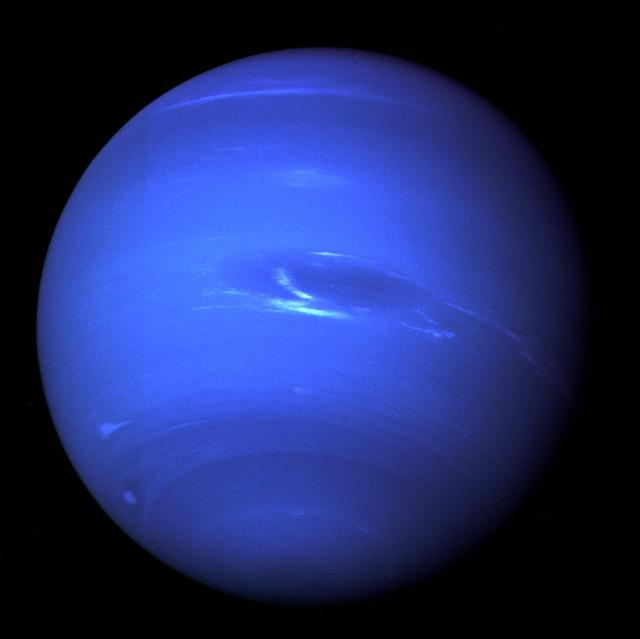
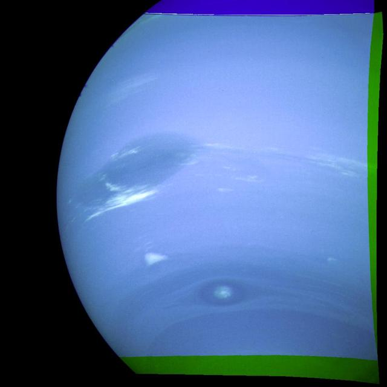

Neptune
Neptune is a dark blue ice giant and the farthest planet from the Sun. It has some of the fastest winds in the solar system.
Type
Ice giant
Winds
Up to 2,000 km/h
Fun Fact
Farthest major planet
Neptune is a dark blue ice giant and the farthest planet from the Sun. It has some of the fastest winds in the solar system.
Ice giant
Up to 2,000 km/h
Farthest major planet
NASA IMAGE ARCHIVE


Methane in Neptune's atmosphere absorbs red light, which contributes to its blue color. The planet is very cold, and its storms can change over time.
The image rotation is a simple visual effect, not a time-scaled model of Neptune's real rotation.
Neptune rotates once in about 16 hours. Start a simple, non-time-scaled illustration.